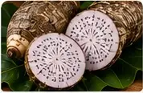
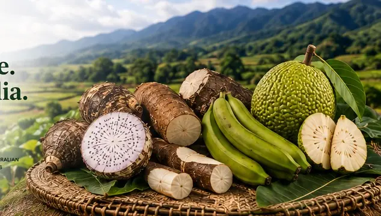
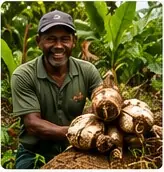
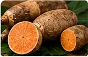
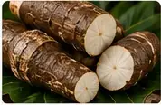
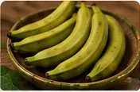
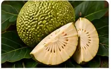
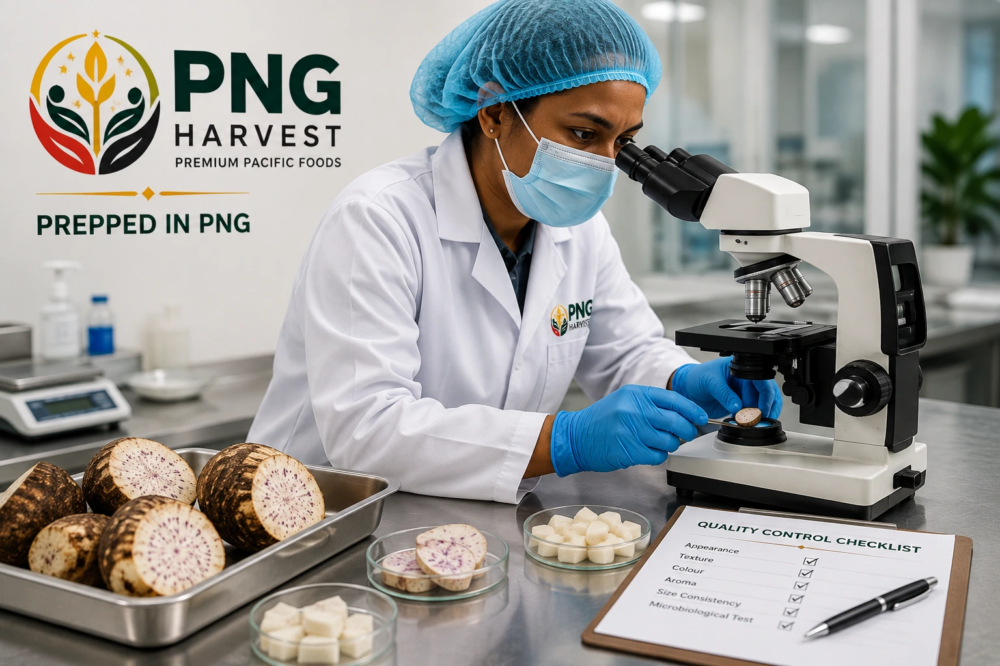
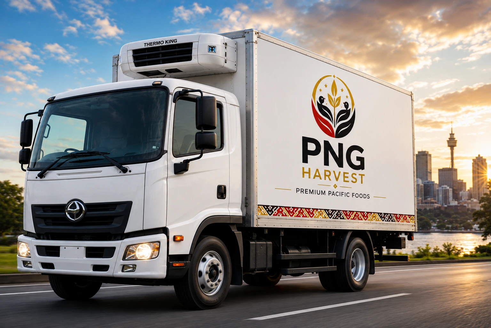

FROM PAPUA NEW GUINEA TO WESTERN AUSTRALIA
PNG-grown. Prepared with care. Frozen for Australia.
Traditional garden foods grown in Papua New Guinea, prepared and packed in Port Moresby, and supplied frozen to retailers in Perth.
5launch products
1 kgretail packs
−18°Cfrozen cold chain

GROWN IN PNG•VALUE-ADDED IN PORT MORESBY•FOR WESTERN AUSTRALIA
01Grown in Papua New Guinea
Traditional staple crops sourced from PNG growers and communities.
02Value-added in Port Moresby
Produce is prepared, packed and frozen in PNG before export.
03Prepared for Australian retailers
A focused frozen range designed for a reliable Perth retail supply chain.
OUR STORY
A simple idea with value on both sides of the Coral Sea.
PNG Harvest is creating a practical commercial bridge between growers in Papua New Guinea and consumers in Western Australia. We are starting deliberately focused: five traditional garden staples, one processing base in Port Moresby and Perth as our first Australian market.
Our model keeps more of the value-adding journey in Papua New Guinea through sourcing, preparation, packaging and freezing, while giving Australian retailers convenient access to authentic PNG-grown foods.

OUR FROZEN RANGE
Five traditional foods. Ready for the freezer aisle.
Our launch range is planned in convenient 1 kg retail packs, prepared in Port Moresby and supplied through a controlled frozen cold chain.




051 KG
Frozen Breadfruit
Peeled, trimmed, cut, packed and frozen for convenient storage.
Stockist enquiries →THE PNG HARVEST JOURNEY
From garden to freezer, with a clear chain of care.
Our operating model is designed to preserve product identity and traceability from PNG growers through to Australian retail.
PORT MORESBY PROCESSING
Local preparation. Commercial standards.
Produce will be received, inspected, washed, peeled, cut, packed and frozen in Port Moresby under documented product and food-safety controls.
01
Garden
Produce grown and harvested by approved PNG suppliers.
02
Collection
Crop identity, quality and supplier lots recorded.
03
Preparation
Washed, peeled, cut and treated to product specification.
04
1 kg Packing
Weighed and sealed into food-grade retail packs.
05
Freezing
Commercially frozen and held under controlled conditions.
06
Perth Retail
Cold-chain delivery through clearance, storage and retailers.
QUALITY FROM GARDEN TO FREEZER
Built around care, traceability and a controlled cold chain.
Our production and import pathway is being developed around applicable Australian biosecurity, food safety, imported-food, labelling and traceability requirements. Product-specific conditions will be confirmed before commercial import.

Approved cropsTraceable batchesControlled processingFrozen cold chain
✓
Know the source
Grower and supplier lots follow each batch into processing.
✓
Prepare consistently
Product-specific preparation and treatment specifications.
✓
Protect the cold chain
Frozen handling from Port Moresby through to Perth retail.
✓
Prepare for Australian sale
Retail labelling and import requirements built into product development.
PNG GROWER NETWORK
Growing a market for the people who grow the food.
PNG Harvest will begin with trusted family and community growers and progressively develop a formal supplier network. Our goal is to build consistent demand, clear crop standards and fair commercial relationships while creating more value-adding activity in Papua New Guinea.
Grower registrationCrop specificationsHarvest recordsQuality standardsSupply planningTraceability
BECOME A PNG HARVEST STOCKIST
Launching with Perth retailers first.
Our initial Australian sales model is wholesale supply to established retailers in Perth, allowing production to grow in line with genuine customer demand and repeat orders.
Independent supermarketsPacific grocery storesSpecialty grocery retailersFood-service businessesWholesalers

Wholesale pricing, launch dates and retailer onboarding will be released as the first commercial supply program is finalised.
RETAILER ENQUIRY
Interested in stocking PNG Harvest?
Tell us about your business and the products you're interested in.